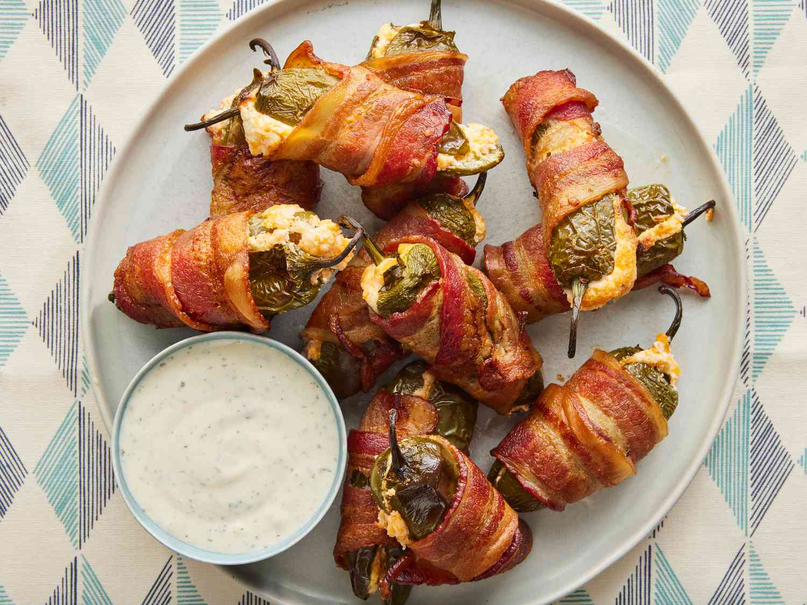

Bacon-Wrapped Jalapeño Poppers

Crispy, creamy, and with the right amount of heat!
These poppers are definitely tastier than store-bought, and you can make them as spicy as you want!
Ingredients
- ½ cup cream cheese
- ½ cup shredded sharp Cheddar cheese
- 12 jalapeno peppers, halved lengthwise, keep as many seeds as desired
- 12 slices bacon
Steps
- Gather ingredients.
- Preheat the oven to 400 degrees F (200 degrees C).
- Mix cream cheese and Cheddar cheese together in a bowl until evenly blended.
- Fill each jalapeño half with cheese mixture.
- Put halves back together and wrap each stuffed pepper with a slice of bacon.
- Arrange bacon-wrapped peppers on the prepared baking sheet.
- Bake in the preheated oven until bacon is crispy, 25 to 35 minutes.
- Serve hot with your favorite dipping sauce.